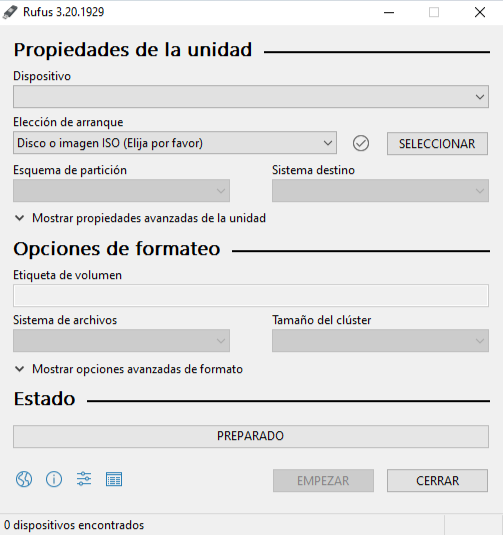
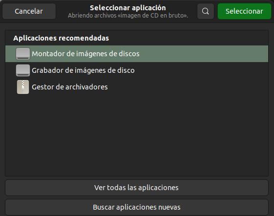
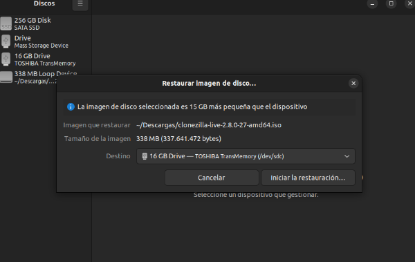
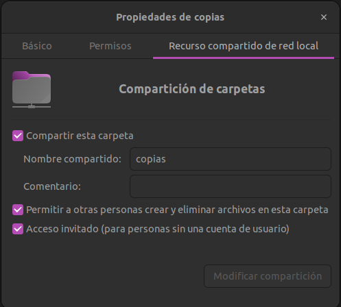
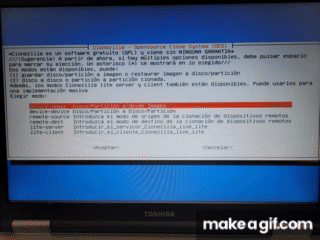
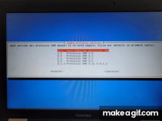

Para poder iniciar con este programa lo primero que necesitamos es crear un pendrive de arranque con clonezilla, para ello dependiendo del sistema operativo que estemos usando haremos dicho pendrive de una forma u otra. En Windows usaremos el programa Rufus en el cual simplemente seleccionaremos el pendrive que vamos a hacer booteable y la imagen de clonezilla que previamente hemos descargado, le daremos a empezar y solamente tendremos que esperar a que el programa termine y ya tendremos nuestro pendrive booteable con clonezilla.
En caso de que nos encontremos en Ubuntu nos ayudaremos de la propia interfaz gráfica y de Ubuntu que incorpora una herramienta para hacer un pendrive booteable. Le daremos click derecho a la imagen de clonezilla que hemos descargado, seleccionaremos abrir con otra aplicación y le daremos a grabador de imágenes de disco. Una vez estemos dentro seleccionamos el pendrive que queremos hacer booteable y esperamos a que termine.
 Una vez tengamos nuestro pendrive de arranque creado lo que tenemos que hacer es iniciar clonezilla insertando dicho pendrive en la máquina que queramos utilizar. Nos deberá de aparecer la siguiente imagen, si te ha salido esto, significa que tu pendrive funciona correctamente.

Antes de continuar con la parte de clonezilla necesitamos habilitar una carpeta para poder compartir la imagen de forma remota mediante samba. Ejecutaremos en nuestra terminal de Ubuntu el comando sudo apt install samba para instalarlo y poder usar sus servicios, a continuación tendremos que crear una carpeta que se llamará copias dentro de la carpeta media.
Una vez hayamos creado la carpeta procederemos a habilitar la opción de compartir, para ello le damos click derecho a la carpeta, hacemos click en propiedades y nos vamos a la tercera opción que pone "Recurso compartido de red local" y activamos las tres casillas que nos aparecen y le damos a modificar compartición para que se efectúe el cambio.
Para continuar con el proceso de creación de imagen para la copia de seguridad mediante Samba podemos elegir entre la primera opción (que usará solamente el pendrive y no podremos quitarlo en ningún momento) o la segunda opción (con la cual el programa usará la ram del ordenador para llevar el programa y podremos retirar el pendrive). Elegiremos la que mas nos guste, cualquiera de las dos nos sirve, una vez seleccionada nos dejará seleccionar idioma y la distribución de teclado, eso lo haremos a gusto personal de cada uno.
Aquí ya estaremos oficialmente dentro de clonezilla, nos aparecerán varias opciones como podemos apreciar en esta captura de abajo, sin embargo, para crear la copia de seguridad nosotros elegiremos la que dice device-image, una vez seleccionada esta nos aparecerá una nueva ventana en la que escogeremos la opción samba-share, dicha opción nos permite hacer el traspaso de la imagen del disco de forma remota a la carpeta que hemos habilitado anteriormente.
Tendremos que añadir primeramente la dirección IP de la máquina de la que estamos haciendo la copia que debe de estar conectado por cable de red, el Gateway y el DNS.
Una vez hayamos introducido la dirección de la máquina de la que queremos hacer la copia nos pedirá la dirección del equipo servidor, es decir, del equipo en el que queremos hacer la copia además del usuario con permisos en la carpeta que hemos creado, este puede ser el usuario habitual o un usuario extra que hayamos creado solo para esta tarea y por último debemos de añadir el nombre de la carpeta que hemos habilitado no es necesario poner la ruta completa por lo que usaremos /copias.
Una vez realizados los pasos anteriores lo que tendremos que hacer es aceptar las dos primeras opciones de las dos ventanas proximas que nos saldrán e introducir la contraseña del usuario que hemos puesto en el paso anterior para que pueda conectarse a la carpeta del equipo de forma remota.
Una vez hayamos establecido la contraseña del usuario nos deberá de aparecer la pestaña del modo de ejecución, nosotros elegiremos el primero, beginner mode.
Nos preguntará qué queremos hacer, en este caso, como queremos hacer una copia de seguridad le daremos a savedisk que nos guardará el disco local como una imagen. Le ponemos nombre a la imagen que vamos a crear, elegimos el disco del que vamos a hacer la imagen y todas las siguientes opciones son las opciones por defecto o a nuestro gusto si queremos comprobar la imagen una vez realizada.
Una vez realizados estos pasos deberá de iniciarse una barra de progreso que tendremos que dejar terminar para que la copia de seguridad se realice por completo.